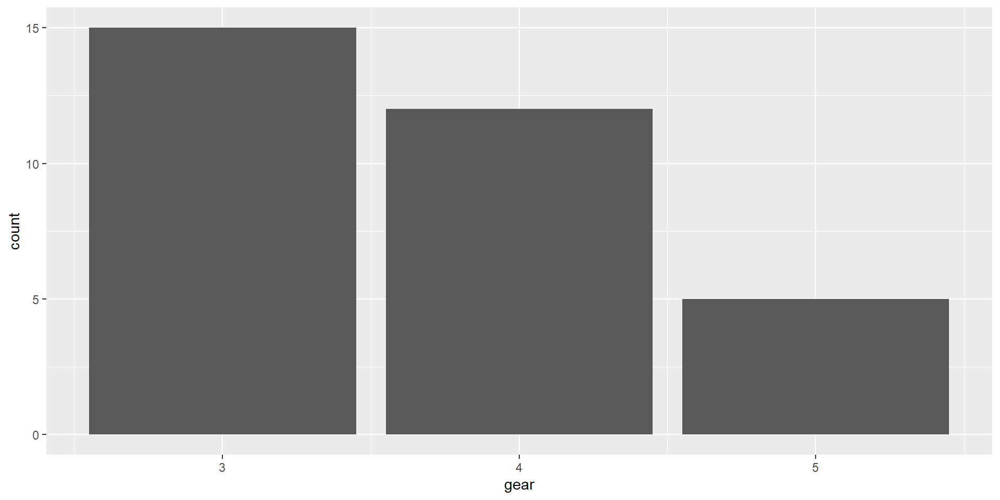
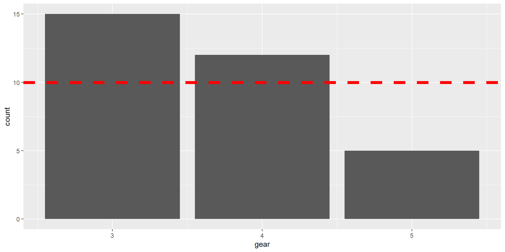
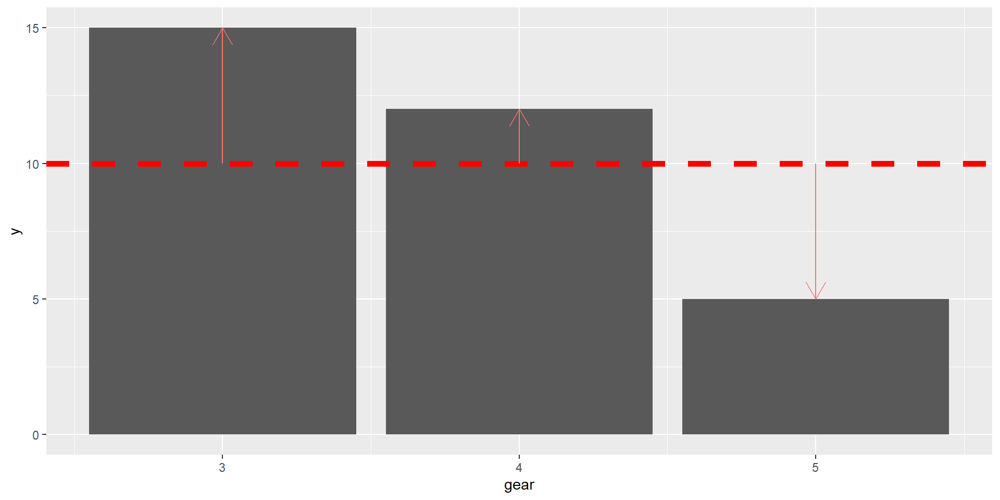
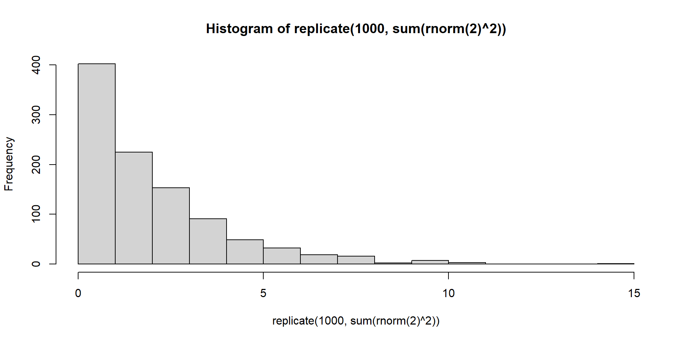
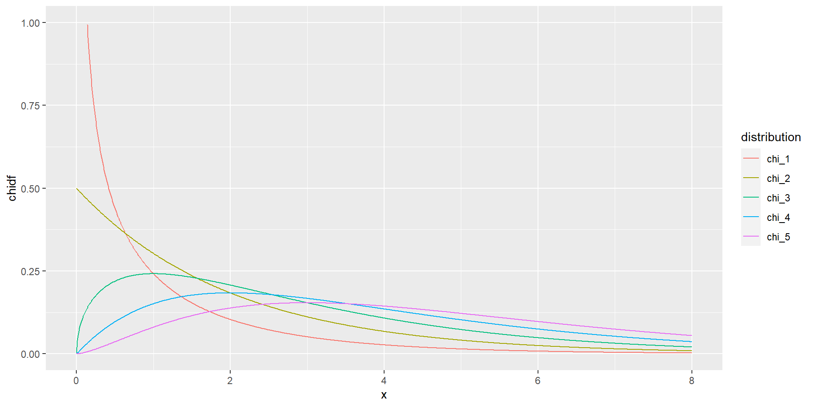
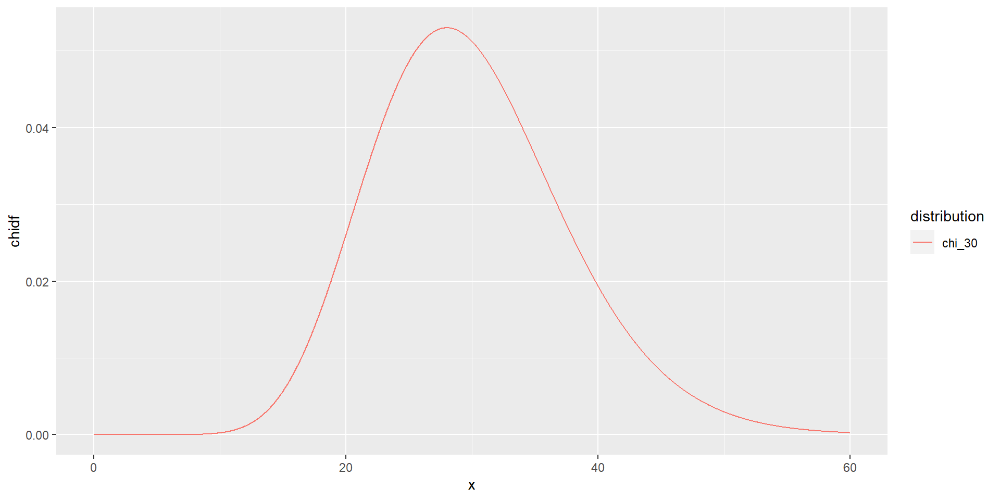

Engine Transmission
Mazda RX4 V-shape manual
Mazda RX4 Wag V-shape manual
Datsun 710 Straight manual
Hornet 4 Drive Straight automatic
Hornet Sportabout V-shape automatic
Valiant Straight automatic
Duster 360 V-shape automatic
Merc 240D Straight automatic
Merc 230 Straight automatic
Merc 280 Straight automatic
Merc 280C Straight automatic
Merc 450SE V-shape automatic
Merc 450SL V-shape automatic
Merc 450SLC V-shape automatic
Cadillac Fleetwood V-shape automatic
Lincoln Continental V-shape automatic
Chrysler Imperial V-shape automatic
Fiat 128 Straight manual
Honda Civic Straight manual
Toyota Corolla Straight manual
Toyota Corona Straight automatic
Dodge Challenger V-shape automatic
AMC Javelin V-shape automatic
Camaro Z28 V-shape automatic
Pontiac Firebird V-shape automatic
Fiat X1-9 Straight manual
Porsche 914-2 V-shape manual
Lotus Europa Straight manual
Ford Pantera L V-shape manual
Ferrari Dino V-shape manual
Maserati Bora V-shape manual
Volvo 142E Straight manual04 - Аналіз номінативних даних
Кількісні методи в економіці
Ігор Мірошниченко
КНЕУ::ІІТЕ
11/9/22
Аналіз номінативних даних
1. Перевірка гіпотези про те, що розподіл номінативної змінної відрізняється від певного заданого теоретичного розподілу
1. Перевірка гіпотези про те, що розподіл номінативної змінної відрізняється від певного заданого теоретичного розподілу
1. Перевірка гіпотези про те, що розподіл номінативної змінної відрізняється від певного заданого теоретичного розподілу
2. Перевірка гіпотези про взаємозв’язок між двома номінативними змінними
Transmission
Engine automatic manual
V-shape 12 6
Straight 7 7Задача 1: розподіл номінативної змінної
Для вирішення задачі, як завжди розраховується p-value:
виміряти відхилення між теоретичним та емпіричним розподілом
перевірити, що буде, якщо вірна гіпотеза \(H_0\) і ми багаторазово повторювали свій експеримент, які б відхилення ми отримували?
знаючи величину відхилення, ми можемо сказати яка ймовірність отримати такі або ще більші відхилення
Простий приклад з монеткою
Підкидаємо монетку 60 разів і отримуємо результат у вигляді бінарної змінної.
Рахуємо скільки разів зустрічається “орел” і “решка”
Якщо ми вважаємо монетку чесною, то гіпотеза \(H_0\) - розподіл частот “орла” і “решки” є рівномірний, або ймовірність “орла” дорівнює ймовірності “решки”
Приклад: N = 60
Observed: Решка - 20, Орел - 40,
Expected: Решка - 30, Орел - 30
\[H_0: p_{орла} = p_{решки} = 0.5\] \[H_1: p_{орла} ≠ p_{решки} ≠ 0.5\]
Простий приклад з монеткою
| Решка | Орел | |
|---|---|---|
| Observed | 20 | 40 |
| Expected | 30 | 30 |
\[(20 - 30)^2 + (40 - 30)^2 = 200\]
Альтернатива
| Решка | Орел | |
|---|---|---|
| Observed | 1020 | 1040 |
| Expected | 1030 | 1030 |
\[(1020 - 1030)^2 + (1040 - 1030)^2 = 200\]
Тому “відстань” між спостереженнями та очікуваними значеннями необхідно нормувати.
Що робити?
\[\left(\frac{20 - 30}{\sqrt{30}}\right )^2 + \left(\frac{40 - 30}{\sqrt{30}}\right)^2 \approx 6.7\]
Насправді ми розрахували відстань \(\chi^2\) Пірсона:
\[\chi^2 = \sum_{i=1}^{n}\left(\frac{O_i - E_i}{\sqrt{E_i}}\right )^2 = \sum_{i=1}^{n}\frac{(O_i - E_i)^2}{E_i}\] \[df = n-1\]
Більш детально тут: Відстань Пірсона \(\chi^2\)
Розподіл \(\chi^2\) Пірсона
Розподіл \(\chi^2\) Пірсона
\[\chi^2 = \sum_{i=1}^{2}\left(\frac{O_i - E_i}{\sqrt{E_i}}\right )^2 = \sum_{i=1}^{n}\left(\frac{O_1 - E_1}{\sqrt{E_1}}\right )^2 + \sum_{i=1}^{n}\left(\frac{O_2 - E_2}{\sqrt{E_2}}\right )^2\]
Якщо вірна гіпотеза \(H_0\), тоді найчастіше ми будемо отримувати незначні відхилення між очікуваними та отриманими значеннями.
Все, що під квадратом у формулі підпорядковується нормальному закону розподілу з середнім \(M = 0\), а дисперсія \(D = 1\) - стандартний нормальний розподіл.
Іншими словами, розподіл \(\chi^2\) Пірсона складається з суми квадратів нормальних стандартних розподілів.
\[\chi^2 = \sum_{i=1}^{2}\left(\frac{O_i - E_i}{\sqrt{E_i}}\right )^2 = \sum_{i=1}^{n}\left(\frac{O_1 - E_1}{\sqrt{E_1}}\right )^2 + \sum_{i=1}^{n}\left(\frac{O_2 - E_2}{\sqrt{E_2}}\right )^2 = \mathcal{(N_1)^2 + (N_2)^2}\]
Розподіл \(\chi^2\) Пірсона
Розподіл \(\chi^2\) з \(k\) степенями свободи - це розподіл суми квадратів \(k\) незалежних стандартних нормальних випадкових величин.
Розподіл \(\chi^2\) Пірсона

Розподіл \(\chi^2\) Пірсона
Розподіл \(\chi^2\) з двома степенями свободи \((df = 2)\):
Розподіл \(\chi^2\) Пірсона
tibble(x = seq(0, 8, .01),
chi_1 = dchisq(x, df = 1),
chi_2 = dchisq(x, df = 2),
chi_3 = dchisq(x, df = 3),
chi_4 = dchisq(x, df = 4),
chi_5 = dchisq(x, df = 5)) %>%
pivot_longer(cols = -x, values_to = 'chidf', names_to = 'distribution') %>%
ggplot(aes(x = x, y = chidf, colour = distribution))+
geom_line() +
scale_y_continuous(limits = c(0, 1))

Розрахунок p-value
\[\chi^2 = \left(\frac{20 - 30}{\sqrt{30}}\right )^2 + \left(\frac{40 - 30}{\sqrt{30}}\right)^2 \approx 6.7\] Distribution Calculator
Таблиці спряженості
Таблиці спряженості
Маємо дві номінативні змінні: стать і спеціалізація, обидві з двома градаціями
| Хлопці | Дівчата | |
|---|---|---|
| Кібернетика | 15 | 9 |
| Комп. науки | 11 | 6 |
\(H_0\) - розподіл не відрізняється від очікуваного (рівномірного).
\(H_1\) - розподіл відрізняється: дві змінні взаємопов’язані між собою.
Таблиці спряженості
| Хлопці | Дівчата | Всього | |
|---|---|---|---|
| Кібернетика | 15 | 9 | 24 |
| Комп. науки | 11 | 6 | 17 |
| Всього | 26 | 15 | 41 |
Розраховуємо очікувані значення, враховуючи дисбаланс категорій:
\[E_{oe} = \frac{f_o * f_e}{N}\]
Хлопців 26 з 41 - 63,4%
Дівчат 15 з 41 - 36,6%
Тоді 63,4% хлопців з 24 кібернетиків та 17 кіб.наук буде 15,2 та 10,8 відповідно.
А 36,6% дівчат з 24 кібернетиків та 17 кіб.наук буде 8,8 та 6,2 відповідно.
Таблиці спряженості
Емпіричні значення
| Хлопці | Дівчата | Всього | |
|---|---|---|---|
| Кібернетика | 15 | 9 | 24 |
| Комп. науки | 11 | 6 | 17 |
| Всього | 26 | 15 | 41 |
Теоретичними значення
| Хлопці | Дівчата | Всього | |
|---|---|---|---|
| Кібернетика | 15,2 | 8,8 | 24 |
| Комп. науки | 10,8 | 6,2 | 17 |
| Всього | 26 | 15 | 41 |
Таблиці спряженості
Емпіричні значення
| Хлопці | Дівчата | Всього | |
|---|---|---|---|
| Кібернетика | 15 | 9 | 24 |
| Комп. науки | 11 | 6 | 17 |
| Всього | 26 | 15 | 41 |
Теоретичними значення
| Хлопці | Дівчата | Всього | |
|---|---|---|---|
| Кібернетика | 15,2 | 8,8 | 24 |
| Комп. науки | 10,8 | 6,2 | 17 |
| Всього | 26 | 15 | 41 |
Тоді: \[\chi^2 = \frac{(15-15.2)^2}{15.2} + \frac{(9-8.8)^2}{8.8} + \frac{(11-10.8)^2}{10.8} + \frac{(6-6.2)^2}{6.2}\]
Поправка Йетса
\[\chi_{Yates}^{2} = \sum\frac{(|f_o - f_e| - 0.5)^2}{f_j}\] \[df = (n-1)(m-1)\] В теорії \(\chi^2\) розподіл неперервний, тоді як розрахункові значення завжди дискретні, в результаті \(H_0\) може відхилятися занадто часто. Для того щоб скорегувати p-value використовується поправка Йетса на неперервність.
Зазвичай використовується, коли деякі очікувані частоти менше 10 і для таблиць 2х2
Розрахунок критерія \(\chi^2\) вручну
O <- matrix(c(15, 11, 9, 6), ncol = 2)
E <- outer(rowSums(O), colSums(O)) / sum(O)
test <- sum((O - E)^2 / E)
df <- (ncol(O) - 1) * (nrow(O) - 1)
pval <- pchisq(test, df, lower.tail = FALSE)
data.frame(chisq = test, df = df, p.value = pval) chisq df p.value
1 0.02087104 1 0.8851308
Pearson's Chi-squared test
data: O
X-squared = 0.020871, df = 1, p-value = 0.8851Розрахунок критерія \(\chi^2\) вручну з поправкою Йетса
YATES <- min(0.5, abs(O - E))
test <- sum((abs(O - E) - YATES)^2 / E)
df <- (ncol(O) - 1) * (nrow(O) - 1)
pval <- pchisq(test, df, lower.tail = FALSE)
data.frame(chisq = test, df = df, p.value = pval) chisq df p.value
1 1.268365e-31 1 1
Pearson's Chi-squared test with Yates' continuity correction
data: O
X-squared = 1.2684e-31, df = 1, p-value = 1Загальні підсумки
\[\chi^2 = \sum_{i=1}^{n}\left(\frac{O_i - E_i}{\sqrt{E_i}}\right )^2 = \sum_{i=1}^{n}\frac{(O_i - E_i)^2}{E_i}\]
Перевіряє гіпотезу про те, що імпіричний розподіл номінативної змінної відрізняється від очікуваного.
Для однієї номінативної змінної \(df = n-1\), де \(n\) - кількість стовпчиків таблиці.
Для таблиць спряженості \(df = (n-1)(m-1)\), де \(n\) - кількість стовпчиків таблиці, \(m\) - кількість рядків.
Всі спостереження незалежні
Мінімальна кількість очікуваних частот в таблиці має бути \(> 5\)
Дякую за увагу!
ihor.miroshnychenko@kneu.ua